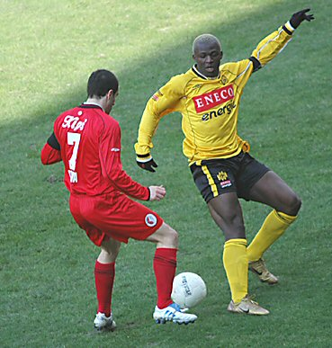

|
Roda JC
- FC Twente (1-2) 6 maart 2005 |
Wegens bier over de camera, moet je het stellen met enkele
cyber- en
screenshots aangevuld met mooie plaatjes van
Foto Frans en SV on-line.
Het duel dat eerder verplaatst werd naar 17.30 uur werd weer teruggezet
naar 14.30 uur op last van burgemeester Som.
Een minuut stilte voor de overleden Rinus Michiels.
Mooi doek van de Twentesupporters.
Enkele mededelingen voor de KNVB.

In de eerste helft speelde Twente vrij slap.
Al na een kwartier scoort Kone in samenwerking met Cissé 1-0.
Boschker is verslagen nadat Cissé Majstorovic eruitloopt.
Kah en N'Kufo worden gewaarschuwd door Luinge die aanvankelijk
goed floot maar daarna onder meer een handsbal van Heubach
in de zestien niet zag.
Van Dijk legt de bal klaar voor een vrije trap.
Het schot wordt even losgelaten door Boschker waarna Sergio net te laat
komt om te scoren.
PmR wil anoniem blijven.
Maar blijkt uiteindelijk toch wel graag met zijn nieuwe Miami
Dolphins muts
op de foto te willen.
In de tweede helft ziet het publiek een omgekeerde wedstrijd.
Twente
neemt het initiatief van Roda compleet over.
In de 50e min. Maakt Shoukov de gelijkmaker.
N'Kufo maakt natuurlijk ook zijn doelpuntje: 1-2, (58'). Twente
was in
tegenstelling tot in de eerste helft na de rust de betere club.
Vloet probeerde het nog met Sonko en Sofiane, maar offerde
het middenveld
op waarna er met enige regelmaat vrij verkeer richting Kujovic mogelijk was.
Kone speelt al enkele wedtrijden beneden zijn kunnen.
Sofiane blijkt niet de aanwinst die Roda nodig heeft.
Sonko en Kujovic bezochten de K.O.
De lift-boys.
De Boesjer Vrunj uit Koningsbosch.
De FP-gedoogzone ;-)
Bah bah, kom je na de wedstrijd ook nog een stel Twentesupporters
tegen
in het home...
En ook vandaag weer deed de laatste koempel de lamp uit en de
poort dicht.

Zonder punten gaan we weer naar huis :-(
Met de uitwedstrijd tegen Feyenoord in het vooruitzicht wordt de
afstand
naar de nacompetitiekandidaten ongekend klein. 3 april wacht NAC en ook
die ploeg ziet Roda als een lekker hapje (in Breda verloor Roda met 4-0)!
© Koempels Pleasure Dome